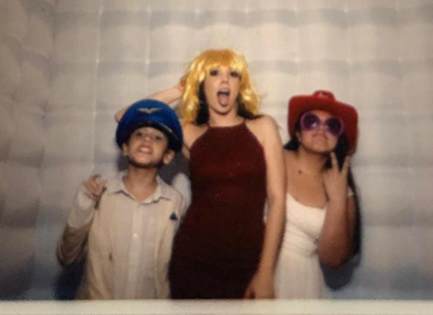

¿Quién soy?
Mi nombre es Marian Azul Pimentel Zepeda,tengo 16 años, vivo y naci a LZC, me gusta mucho jugar tennis, las series como The vampire diaries y Pretty little liars.
Mi nombre es Marian Azul Pimentel Zepeda,tengo 16 años, vivo y naci a LZC, me gusta mucho jugar tennis, las series como The vampire diaries y Pretty little liars.
Chloé tiene 6 años es mi perrita y fue un regalo de cumpleaños, crecimos juntas y no me veo viviendo mi vida sin ella

Tennis: Me encanta jugar tennis es mi pasatiempo favorito, me relaja y me ayuda a despejarme de todo,tennis tiene para mi un gran valor sentimental ,llevo 2 años entrenado y actualmete voy en avanzado!
Cuando tenia 5 años me hice fan de selena, es un ejemplo a seguir, tuvo un gran impacto en mi en bastantes cosas y actualmente es mi cantante favorita.

Vi TVD en pandemia y esa serie se volvio mi favorita y aprendí muchas cosas por el desarrolo de los personajes
Naomi es tennista profesional y me inspiro bastante en ella